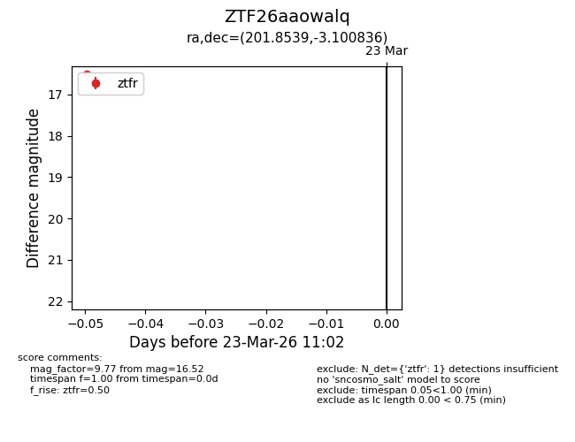
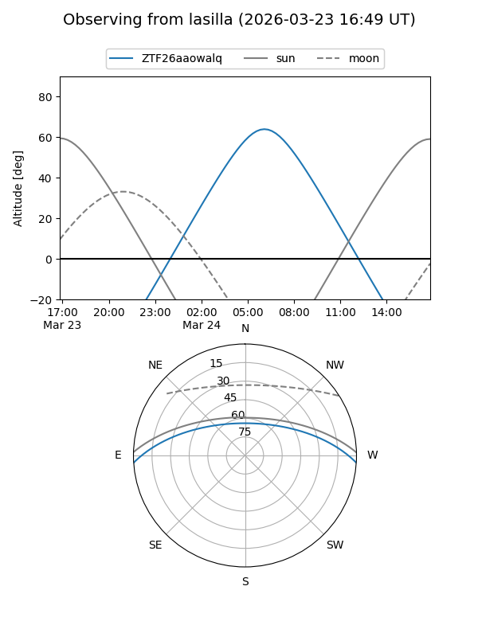
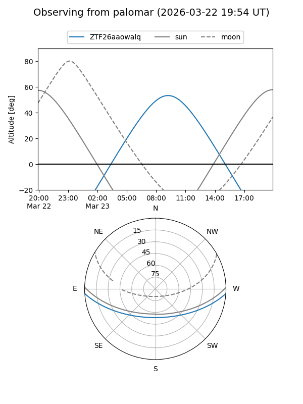

ZTF26aaowalq
Target ZTF26aaowalq at 2026-03-23 11:04
Aliases and brokers:
FINK: link
Lasair: link
ALeRCE: link
alt names
ZTF26aaowalq (ztf,fink_ztf)
Coordinates:
equatorial (ra, dec) = 201.8539,-3.10084
equatorial (HMS+DMS) = 13:27:24.94,-03:06:03.01
galactic (l, b) = (320.3414,+58.54954)
Flags:
Photometry:
last ztfr=16.52
1 ztfr detections
Lightcurve

Visibility


Additional plots